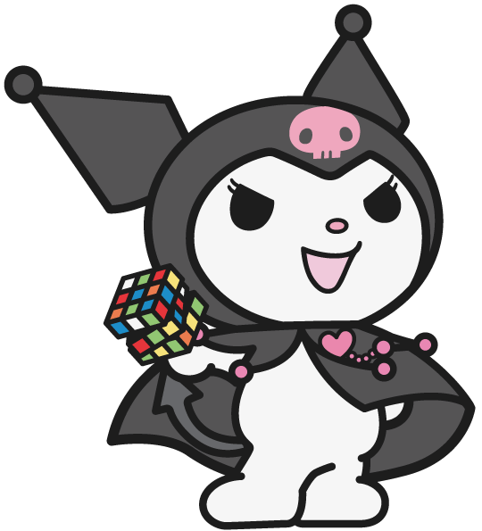
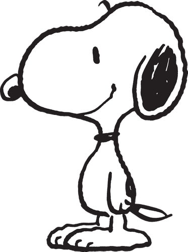
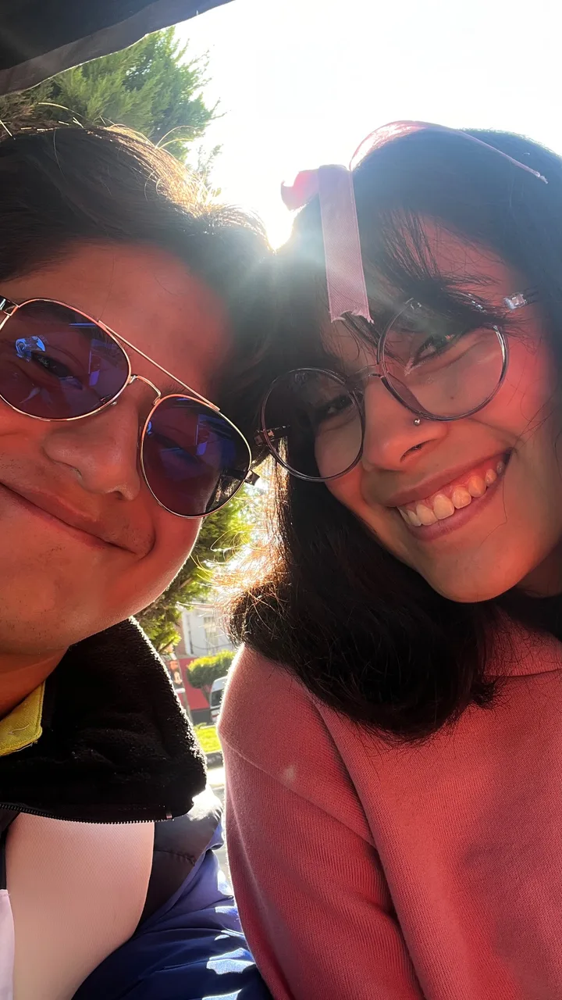
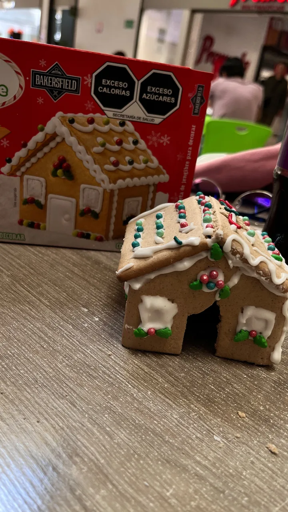
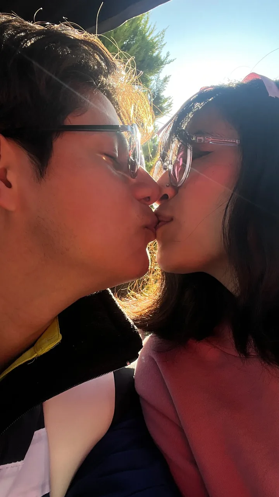

3 noviembre 2026Una casita sin puerta
📍 Tlaxcala
- Comimos
- Volvimos a los Tacos El Jefe y unas monkey papas
- Lugares
- Su universidad, Vértice y los tacos
- Ella llevaba
- Pantalón blanco, blusa negra, tenis blancos, sudadera rosa y un moñito (matcheamos colores ese día)
"¿Por qué mi casa no tiene puerta?" — Daniel
Lo que pasó
Como de costumbre, llegué temprano a su universidad y esta vez ella ya casi salía. La esperé afuera del callejón, llegó y fuimos a ver qué desayunar. Fuimos a los tacos de la vez pasada y volvimos a comer lo mismo, pero esta vez ella compró un Delaware, y aprovechando el Oxxo vimos una casita de jengibre y la compramos.
Terminamos de comer y regresamos a su U. Esta vez me tocó esperar en la cafetería, ya que la biblioteca estaba cerrada. Me vio una de sus amigas y se tiró unos comentarios muy graciosos. Se fue y aún esperé un rato para volver a ver a Linn. Cuando llegó, dijo que seguía esperando, pero se quedó un rato conmigo y le dijo a una de sus amigas que le avisara cuando el profesor regresara. Le avisó y regresó a su clase. Esperé un poco más y ya salimos, con la noticia de que sus amigas la funaron por verme, ya que se supone que solo éramos amigos.
Salimos y fuimos a Vértice. Armamos la casita de jengibre y fue muy lindo; una pared se nos rompió junto con la puerta. Después de armarla, decorarla y tomarle fotito, intentamos comerla, pero estaba muy dulce, demasiado dulce, y no nos la pudimos comer, así que solo la guardamos. Fuimos por unas monkey papas (es muy lindo porque fue lo primero que comimos cuando empezamos a salir). Grabamos un video de cómo nos dábamos de comer; le daba un besito, pero no quería porque pensaba que le iba a pasar la papa. Fue muy lindo y gracioso.
Para cerrar el día nos pusimos a armar un mini circuito de canicas. Fue muy lindo y esta vez sí lo pudimos armar bien, porque ya encontramos el instructivo. Grabamos cómo funcionaba y se lo di para que se lo llevara a su casa, porque sé que le gusta mucho armar cositas <3. Fuimos camino a su casa; teníamos pensado pasar a otro lado, pero ya no nos dio tiempo. Llegó a su casita y se bajó, y yo llegué al centro, pasé a la iglesia y me fui en taxi a mi casa.
Unas horas más tarde tuvimos una pelea muy fea, pero la pudimos arreglar. Al final dormimos en llamada y aprendimos que podemos arreglar las cosas, que vamos mejorando poco a poco y, sobre todo, que seguimos siendo un grandioso equipo y que los tropiezos son parte normal del proceso.
Te amo mucho, mi Pucca hermosa. Aunque peleemos, siempre encontraremos una solución. Te amo y, como te dije en mis votos, siempre seré tuyo y te amaré. Te amo hoy, mañana y siempre, Aislinn Saavedra Minero 🖤

Memorias de videos
Fotos extra


